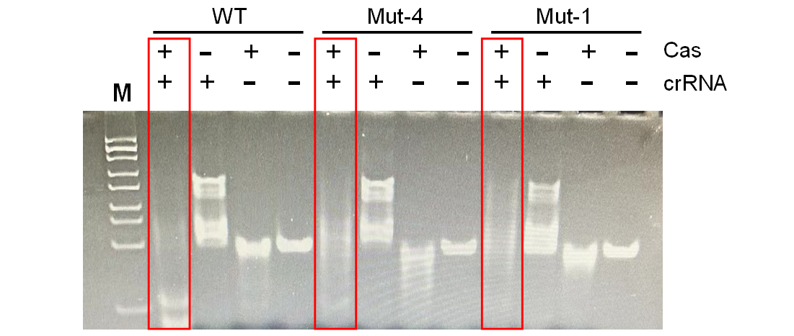
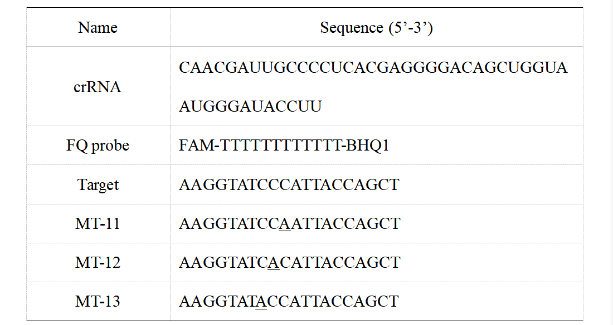
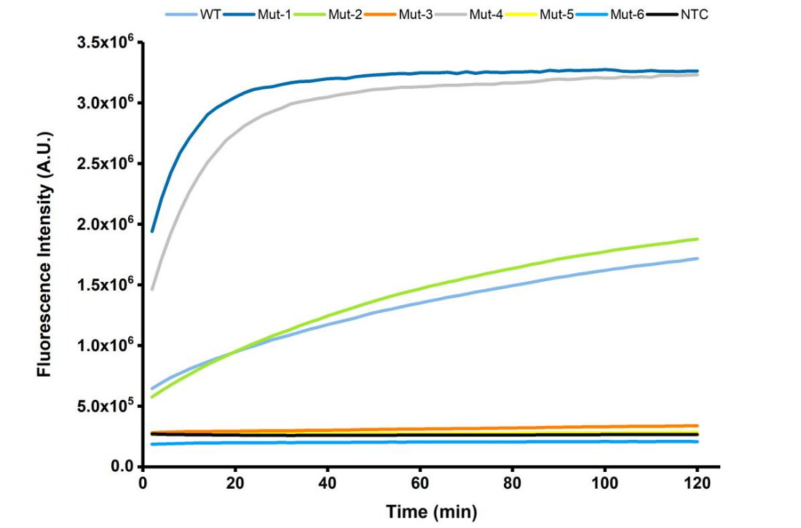
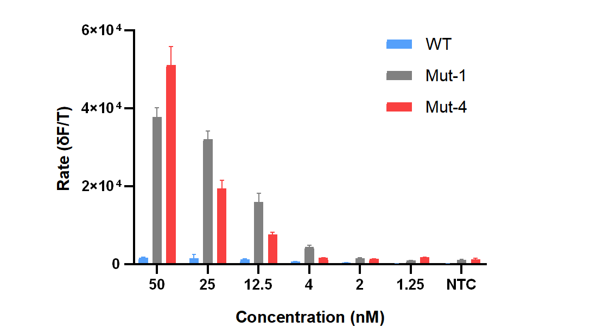
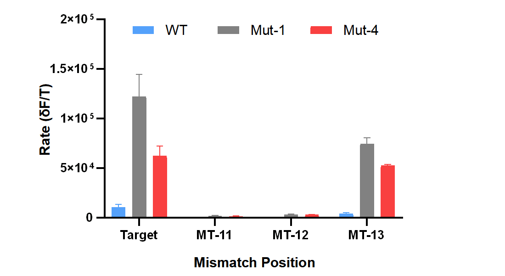
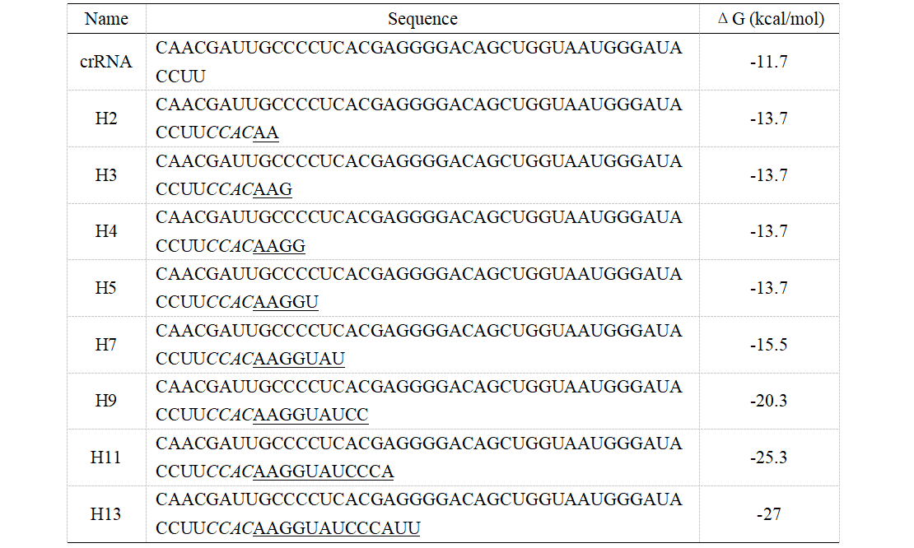
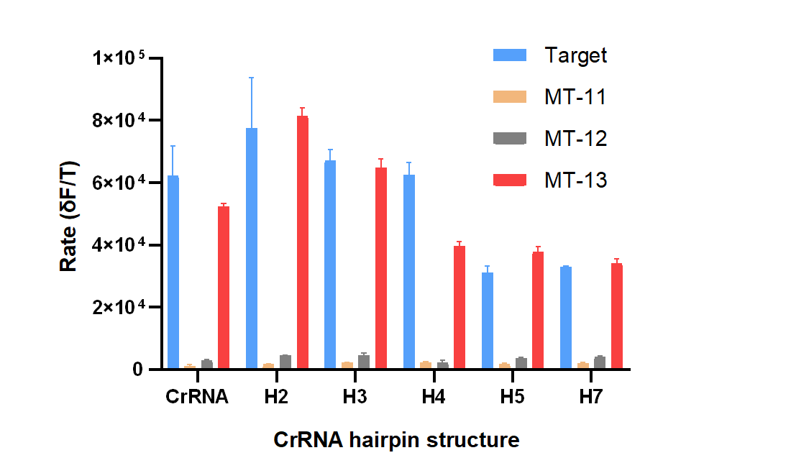
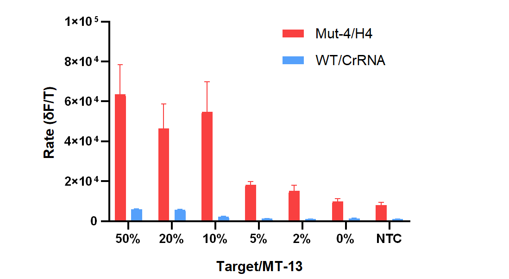

Result wet lab
The ssDNA cleavage activity of mutants
Our team expressed Mut 3-6,of which only Mut-4 had single-stranded cleavage activity.When comparing Mut-1 and Mut-2,Mut1 had the better cleavage activity. Therefore,in the following steps we chose Mut-1 and Mut-4 to compare the cleavage activity with wild-type wtCasΦ.
First, we verified the cleavage activity of the mutants with the ssDNA target. Single-strand DNA labelled with fluorescence at the end was incubated with different mutant proteins. The PAGE results are as shown in Figure 8. Under the catalysis of the three proteins, the target DNA was apparently cleavaged. From the preliminary results of PAGE, there was no significant difference between the mutant protein and the wild-type protein in the cleavage activity of the single-strand DNA target.

First, we verified the cleavage activity of the mutants with the ssDNA target. Single-strand DNA labelled with fluorescence at the end was incubated with different mutant proteins. The PAGE results are as shown in Figure 8. Under the catalysis of the three proteins, the target DNA was apparently cleavaged. From the preliminary results of PAGE, there was no significant difference between the mutant protein and the wild-type protein in the cleavage activity of the single-strand DNA target.
Figure 8. PAGE results for cleavage ssDNA target with different Cas-crRNA.
The trans-cleavage activity of mutants
The fluorophore quencher (FQ) reporter assays were employed to evaluate the target-triggered trans-cleavage activity of wild-type CasΦ and mutants. The final reaction (20 μL) contained final concentrations of 100 nM CasΦ, 120nM crRNA, 100nM FQ probe, with 50 nM target DNA in cleavage buffer (10 mM HEPES-Na pH7.5, 150 mM KCl, 5 mM MgCl2, 10% glycerol, 0.5 mM TCEP). Fluorescence signals were obtained every 2 minutes at 37°C. The sequence of crRNA, activator ssDNA and FQ probe were listed in Table 2.
Table 2. The sequence of crRNA, target DNA and FQ probe for FQ-reporter assays

The results of the fluorescence analysis were shown in Figure 9. The activity of the Mut-1 and Mut-2 proteins which were designed by Doudna’s group, expressed and purified by our team, and its results were consistent with what were reported. And the four mutant proteins (Mut-3 to Mut -6) constructed by our team, in which Mut-4 has a high target triggered trans-cleavage activity compared to the wild-type. And it has comparable cleavage activity to the Mut-1 designed by Doudna's group. These results further verify the hypothesis that the helix α7 might regulate the accessibility of the RuvC domain for the association of single-stranded DNA (ssDNA).

Figure 9. The time-course fluorescence intensity curves of FQ reporter cleavage by different Cas-crRNA in the presence of DNA targets.
Further, the DNA detection performances of mutants were investigated by a series of DNA targets with different concentrations. The initial reaction rate of the fluorescence signal was employed to evaluate the trans-cleavage activity of different mutants. As shown in Figure 10, at all target concentrations, the trans-cleavage activities of Mut-1 and Mut-4 were both significantly higher than that of the wild-type CasΦ. But there was no significant difference between Mut-1 and Mut-4. At high (50 nM) or low (1.25 nM) concentration, the initial reaction rate of Mut-4 was higher than that of Mut-1; at the medium concentrations (2-25 nM), the reaction rates of Mut-1 were higher than that of Mut-4. Although this conclusion still needs more experimental data to be proved, the preliminary results show that the Mut-4 constructed by our team has a good trans-cleavage activity for DNA detection.

Figure 10. The reaction rates of FQ reporter cleavage by Cas-crRNA in the presence of DNA targets with different concentrations.
Specificity for single-base difference
The ability of detection method to distinguish the single-base difference in the target sequence is very important in nucleic acid detection. Especially in DNA mutation analysis, it is necessary to detect the target sequence with a single-base mutation from the background of a large number of wild-type sequences. In order to test the recognition ability of wild-type CasΦ and mutants to single-base difference targets, we introduced a single-base mismatch at different positions in the target sequences (Table 2). As shown in Figure 11, when the single-base mismatch was at position 11 or 12 (number from 3 'end), the nonspecific signals produced by wild-type CasΦ or mutants can be almost ignored, indicating that CasΦ has high recognition specificity for single-base mismatch at these positions. This may be due to the reduced stability of the crRNA/DNA hybrid when the single-base mismatch is located in the middle region of the crRNA and DNA target hybridization. However, when the single-base mismatch was at position 13 (number from 3 'end), all of these three CasΦ nucleases produce non-specific signals that were comparable with the complementary target. Because the target recognition region of CRISPR-Cas system was limited by PAM sequence, the tolerance of mismatch would hinder the application of CRISPR-Cas system in DNA mutation analysis.

Figure 11. The reaction rates of FQ reporter cleavage by Cas-crRNA in the presence of DNA targets with single-base mismatch.
Effect of crRNA secondary structure on specificity of CRISPR-Cas system
As reported by Gersbach et al. a hairpin secondary structure onto the spacer region of crRNA can increase the CRISPR-Cas system specificity for target cleavage. To verify whether this strategy is effective for the trans-cleavage activity of CasΦ, we introduced different lengths of hairpin structures into the crRNA of CasΦ (Table 3). The FQ-reporter assays showed that the recognition of complementary target or mismatch target by Mut-4 was affected by the hairpin structure in crRNA at the same time. And the same results were obtained on wild-type CasΦ and Mut-1 (data not shown). By comparing the specific signal from the complementary target and the non-specific signal from MT13, we found that crRNA with a 4-base pair stem structure (H4) may be able to improve the specificity of the CasΦ system for target detection. (Figure 12)
Table 3. The sequence of crRNAs with hairpin structures


Figure 12. The reaction rates of FQ reporter cleavage by Mut-4 with hairpin structure crRNA.
Performance of optimized system for DNA mutation detection
Finally, in order to verify the performance of our optimization CRISPR-Cas system for picking up DNA mutations from a large number of background sequences, we mixed different amounts of target sequences with mismatch sequences (MT13) to simulate artificial samples containing 50% to 0% DNA mutations. We chose Mut-4 and crRNA H4 to construct the mutation detection system. As shown in Figure 13, compared with the conventional wild-type CasΦ - hairpin free crRNA system (WT/CrRNA in Figure 13), the Mut-4/H4 system showed better mutation detection performance. For WT/CrRNA system, only when the fraction of target sequences was more than 10% can the signal differentiated from the mismatch sequences be generated. For Mut-4/H4, even if the fraction of target sequences was as low as 2%, the initial reaction rate of the fluorescence signal was still higher than that of the mismatch sequences.

Figure 13. The reaction rates of FQ reporter cleavage with samples containing 50% to 0% DNA mutations.